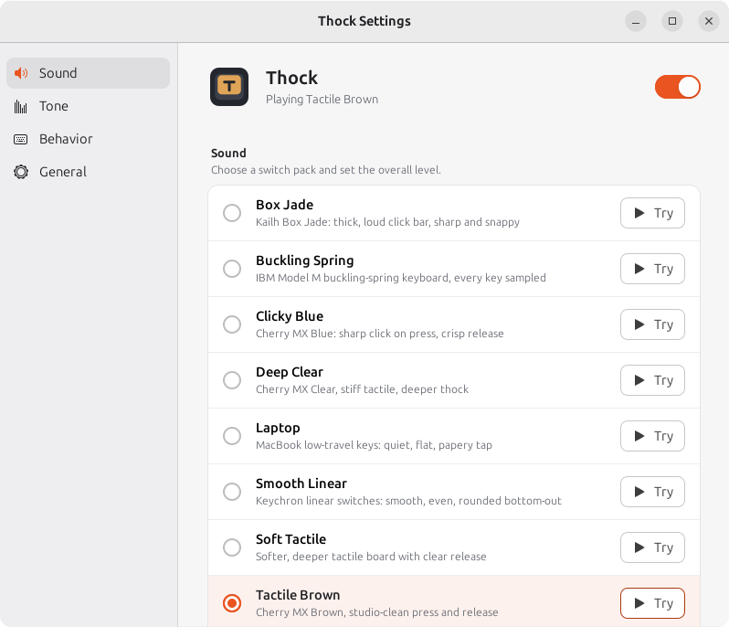

Install
One line, in a terminal:
cd ~ && wget -qO- https://github.com/christophervistal25/thock/releases/latest/download/thock-linux.tar.gz | tar xz && cd thock && ./install.sh && bin/thock
Or clone the repository:
git clone https://github.com/christophervistal25/thock ~/thock cd ~/thock && ./install.sh
The installer installs any missing system packages (asks for your password once), adds Thock to the app menu and turns on start at login. Start it from the app menu or with bin/thock.
Requirements
- Ubuntu 22.04 or newer, or another Debian-based Linux
- An X11 session (on Ubuntu, choose "Ubuntu on Xorg" at the login screen). Check with
echo $XDG_SESSION_TYPE - Speakers or headphones, ideally stereo
- About 15 MB of disk space
Wayland isn't supported out of the box: it doesn't let apps hear system-wide key presses. See FAQ for a community add-on.
Something not working? See Troubleshooting below.
Update
Git install: cd ~/thock && git pull && ./install.sh. Download install: extract the new release over the old folder and run ./install.sh again. Your settings are kept.
Keep the folder where you installed it: the app menu entry and start at login point to it.
Using Thock
Run commands from the Thock folder (for example cd ~/thock).
| What | How |
|---|---|
| Open settings | App menu: Thock, tray icon: Settings..., or bin/thock --settings |
| Start | bin/thock (also starts at login) |
| Quit | Tray: Quit Thock, or bin/thock --quit |
| Pause sounds | Tray: uncheck Sounds On, or the switch at the top of the settings window |
| Test the sound | bin/thock --self-test (current pack) or bin/thock --self-test --all-packs |
| Measure latency | bin/thock --latency-test |
| Settings file | ~/.config/thock/config.json (preferences only) |
Troubleshooting
Thock doesn't open from the app menu
Run it in a terminal so you can see the error:
cd ~/thock && bin/thock --settings
If it was started at login, earlier errors are in the journal: journalctl --user -b | grep -i thock. The fixes below cover the usual messages.
No module named thock
The app menu entry points to a folder that moved or is out of date. Update and re-run the installer from the folder you want to keep:
cd ~/thock && git pull && ./install.sh # or extract the latest release here, then ./install.sh
Missing module or library
For No module named 'gi', Namespace Gtk not available, Namespace AyatanaAppIndicator3 not available, No module named 'Xlib', PortAudio library not found or No module named 'sounddevice': a system package or the Python environment is missing. Re-run the installer, which installs what's missing:
cd ~/thock && ./install.sh
Or install the system packages by hand, then run ./install.sh again:
sudo apt install python3-venv python3-gi python3-xlib gir1.2-gtk-3.0 gir1.2-ayatanaappindicator3-0.1 libportaudio2
If the error persists, delete the environment so it's rebuilt: rm -rf .venv && ./install.sh.
No sound at all while typing, and you're on Wayland
echo $XDG_SESSION_TYPE prints wayland. Wayland doesn't let apps hear system-wide key presses, so Thock can't work there. Log out, click the gear icon on the login screen, choose Ubuntu on Xorg, and log in again.
No tray icon (GNOME)
GNOME needs the AppIndicator extension to show tray icons. Ubuntu ships it on by default (Ubuntu AppIndicators). Check and turn it on:
gnome-extensions list --enabled | grep -i appindicator gnome-extensions enable ubuntu-appindicators@ubuntu.com
On other distributions install AppIndicator and KStatusNotifierItem Support from extensions.gnome.org. Thock still works without the icon; use bin/thock --settings to change settings.
No sound, or sound comes out of the wrong device
- Check that the right output is selected and not muted in Settings > Sound.
- Check Thock isn't paused (tray: Sounds On, or the switch in settings) and the volume isn't at 0.
- Run
bin/thock --self-test. If you hear the test sweep, audio works and the problem is key capture (see Wayland and RECORD). If you don't, it's the audio output. - Thock uses your system default output, so switch the default device in Sound settings, then restart Thock (
bin/thock --quit, thenbin/thock).
Sound feels delayed
Run bin/thock --latency-test; a healthy result is around 15 ms in total. Thock asks PipeWire for a 256-frame buffer. You can ask for a smaller one, or a larger one if you hear crackles:
bin/thock --quit PIPEWIRE_LATENCY=128/48000 bin/thock # lower latency PIPEWIRE_LATENCY=512/48000 bin/thock # more stable on slow machines
Bluetooth headphones add their own delay (often 100 ms or more); wired or USB audio is much faster.
X server has no RECORD extension
Thock reads key presses through the X11 RECORD extension, which almost every X server has. Check with:
xdpyinfo | grep -i record
If nothing is printed, your X server has it disabled (look for Option "RECORD" "false" or a Disable line in /etc/X11/xorg.conf or /etc/X11/xorg.conf.d/). Inside remote desktops and some virtual machines it may not be available at all.
"Already running", or the settings window won't open
Only one copy of Thock runs at a time; opening it again just brings up the settings window of the running copy. If the window doesn't appear, stop it and start fresh:
bin/thock --quit pkill -f "python -m thock" # only if --quit didn't stop it bin/thock --settings
Turn off start at login
Settings > General > Start at login off, or:
rm ~/.config/autostart/thock.desktop
Uninstall
cd ~/thock && bin/thock --quit rm -f ~/.config/autostart/thock.desktop ~/.local/share/applications/thock.desktop rm -rf ~/.config/thock # your settings cd ~ && rm -rf ~/thock # the app itself
The system packages install.sh added are shared with other apps, so they are left in place.
Still stuck? Open an issue with the output of bin/thock --settings and echo $XDG_SESSION_TYPE.
Sound packs
24 packs, all real recordings. Pick one from the tray menu or the settings window.
Calm and deep (new)
- Thocky: deep, muffled thock with a soft, rounded bottom-out. The calmest pack.
- Rainy 75: Rainy 75 aluminium board. Deep, rounded, marbly thock.
- Lubed Tactile: ikki68 Aurora with hand-lubed WS Brown switches. Warm, smooth tactile bump.
Classic
- Buckling Spring: IBM Model M, every key sampled.
- Clicky Blue: Cherry MX Blue. Sharp click on press, crisp release.
- Tactile Brown: Cherry MX Brown, studio-clean press and release.
- Soft Tactile: softer, deeper tactile board with a clear release.
- Deep Clear: Cherry MX Clear. Stiff tactile, deeper thock.
- Smooth Linear: Keychron linear switches. Smooth, even, rounded bottom-out.
- Box Jade: Kailh Box Jade. Thick, loud click bar, sharp and snappy.
- Topre: HHKB with Topre domes. Muted, rounded, cushioned thock.
- Vintage Alps: 1987 Apple keyboard, ALPS SKCM Orange. Crunchy, dry, retro.
- Typewriter: vintage manual typewriter. Dry wooden tick and typebar return.
- Laptop: MacBook low-travel keys. Quiet, flat, papery tap.
From Mechvibes (MIT)
- Cherry MX Black (ABS or PBT keycaps): heavy linear. Deep, smooth, even.
- Cherry MX Red (ABS): light linear. Soft and quick.
- Cherry MX Brown (ABS or PBT): light tactile. Gentle bump.
- Cherry MX Blue (ABS or PBT): clicky. Crisp click on every press.
- Everglide Oreo: linear. Smooth, muted, rounded.
- Everglide Crystal Purple: tactile. Clear bump with a crisp top.
- Topre Purple Hybrid (PBT): Topre domes. Cushioned, muted thock.
Features
- Press and release sounds, with their own samples for Space, Enter and Backspace where the recording has them.
- Tone control from deep "thock" to bright "clack".
- Spatial audio: left-hand keys on the left speaker, right-hand keys on the right.
- Mouse clicks for the left, right and middle buttons (optional).
- Sound on key repeat (optional).
- Natural variation: tiny pitch and volume changes so repeated keys don't sound robotic.
- Tray menu and settings window that follow your light or dark theme. Starts at login if you want it to.
- About 15 ms from key press to sound.
- Private: nothing you type is logged, stored or sent. No network connections.
Privacy
Input is read with the X RECORD extension. Only the event type (key down, key up, mouse button) and the keycode are used, in memory, to choose and pan a sound, and are dropped immediately. Nothing you type is logged, stored or sent. Thock makes no network connections.
Frequently asked questions
What is Thock?
Thock is a free Linux app that plays a real mechanical keyboard sound every time you press a key. It runs in the system tray and has 24 sound packs recorded from real keyboards.
Is Thock free?
Yes. Thock is free and open source under the MIT license. Its code is on GitHub; sound packs keep their own licenses.
Does Thock work on Windows or macOS?
No. Thock runs on Linux only: Ubuntu 22.04 or newer and other Debian-based distributions, in an X11 session.
Does Thock work on Wayland?
Not built in. Wayland does not let apps hear system-wide key presses. On Ubuntu, choose Ubuntu on Xorg at the login screen, or try the community thock-wayland-addon by vitorhmcorreia, a third-party add-on that runs Thock on Wayland. It is not maintained by Thock and installs a system service with sudo, so read it before installing.
Does Thock record or log what I type?
No. Thock only uses which key went down or up to pick and pan a sound, then forgets it. Nothing you type is logged, stored or sent, and Thock makes no network connections. Details: Privacy.
How do I install Thock on Ubuntu?
Run the one-line command in Install. The installer adds any missing system packages, puts Thock in the app menu and turns on start at login.
Which keyboard sounds does Thock include?
24 packs: Thocky, Rainy 75, Lubed Tactile, Buckling Spring (IBM Model M), Clicky Blue (Cherry MX Blue), Tactile Brown (Cherry MX Brown), Soft Tactile, Deep Clear (Cherry MX Clear), Smooth Linear, Box Jade, Topre, Vintage Alps, Typewriter and Laptop, plus 10 from Mechvibes: Cherry MX Black, Red, Brown and Blue (ABS and PBT keycaps), Everglide Oreo, Everglide Crystal Purple and Topre Purple Hybrid. See Sound packs.
Which Thock sound pack is the most relaxing?
Thocky and Rainy 75 are the calmest: deep, muffled sounds with soft attacks and little high-frequency click. Everglide Oreo and Topre Purple Hybrid are deep and muted too, and Lubed Tactile is a warmer, smoother tactile option.
Is there a delay between typing and the sound?
About 15 ms in total, which feels instant. Bluetooth headphones add their own delay, often 100 ms or more; wired or USB audio is faster.
Can I make the sound deeper or brighter?
Yes. The tone slider in the settings window shifts every pack from deep "thock" to bright "clack".
How do I uninstall Thock?
Quit Thock, then delete its app menu entry, autostart entry, settings folder and the Thock folder. The exact commands are in Uninstall.
Who made Thock and why?
Thock is a personal project by Chris (christophervistal25 on GitHub), inspired by the calm, hand-coded programming videos of the YouTube channel Hayyoth. It was built for personal use and shared for anyone who finds it useful.
Screenshot

Sound credits
Thank you to everyone who recorded and shared these sounds. Every pack except Coding Relax is a genuine recording under a free license.
Calm and deep packs (CC0)
- Thocky: "Thocky Keyboard Typing (No Spaces)" by aliyahb
- Rainy 75: "Typing on a rainy 75" by Techrul
- Lubed Tactile: "Mechanical keyboard typing sounds" by Reina0613
Classic packs (CC0)
- Clicky Blue: "Single Mechanical Keyboard Tap.wav" by Professor-Syntax
- Tactile Brown: "Keyboard - Press down" and "Keyboard - Key release" by Foxfire-; "Single_Key_Stroke_Large_Key" by Capt.Jack
- Soft Tactile: "Single Key Presses on Mechanical Keyboard" by Xemptful
- Deep Clear: "Mechanical keyboard clicking. Different keys (4)" by humi74
- Smooth Linear: Keychron K10 recordings by Sadiquecat; "Key_Press" by Mediasaur
- Box Jade: "Kailh Box Jade Switches Sound" by el_boss
- Vintage Alps: "Typing on Apple Standard Keyboard (ALPS SKCM Orange)" by robni7
- Topre: "Keyboard Typing 7 (HHKB, Topre)" by grcekh
- Laptop: "MacBook 2016 trackpad and keyboard sound" by kijjaz
- Mouse clicks: "computer mouse click" by florianreichelt
Attribution required (CC BY 4.0)
- Typewriter: "Typewriter Key Press 01-06" by BryanSaraiva on Freesound, CC BY 4.0. Trimmed and split into press and return.
- Typewriter spacebar: "typewriter_electric_spacebar_several_times.wav" by magedu on Freesound, CC BY 4.0. One press sliced out and level-matched.
- Laptop spacebar: "Tippen - Leertaste drücken, Apple.wav" by BockelSound on Freesound, CC BY 4.0. One press sliced out, noise-reduced and level-matched.
MIT (Mechvibes)
- Cherry MX Black, Red, Brown and Blue, Everglide Oreo, Everglide Crystal Purple and Topre Purple Hybrid: the keyboard sound packs bundled with Mechvibes, Copyright (c) 2026 Hải Nguyễn, MIT License. Converted to Thock's format; each pack folder includes the license text.
GPL-2.0
- Buckling Spring: bucklespring by Ico Doornekamp, GPL-2.0.
Personal use only
- Coding Relax: the keyboard and mouse sounds heard in "No AI - Just pure JS hand coding to relax" by Hayyoth. The sounds come from the keyboard-sound software used in the video and belong to their owners. Not under a free license; it will be removed on request.
Full list of sources, authors, licenses and edits: SOUNDS-LICENSES.md